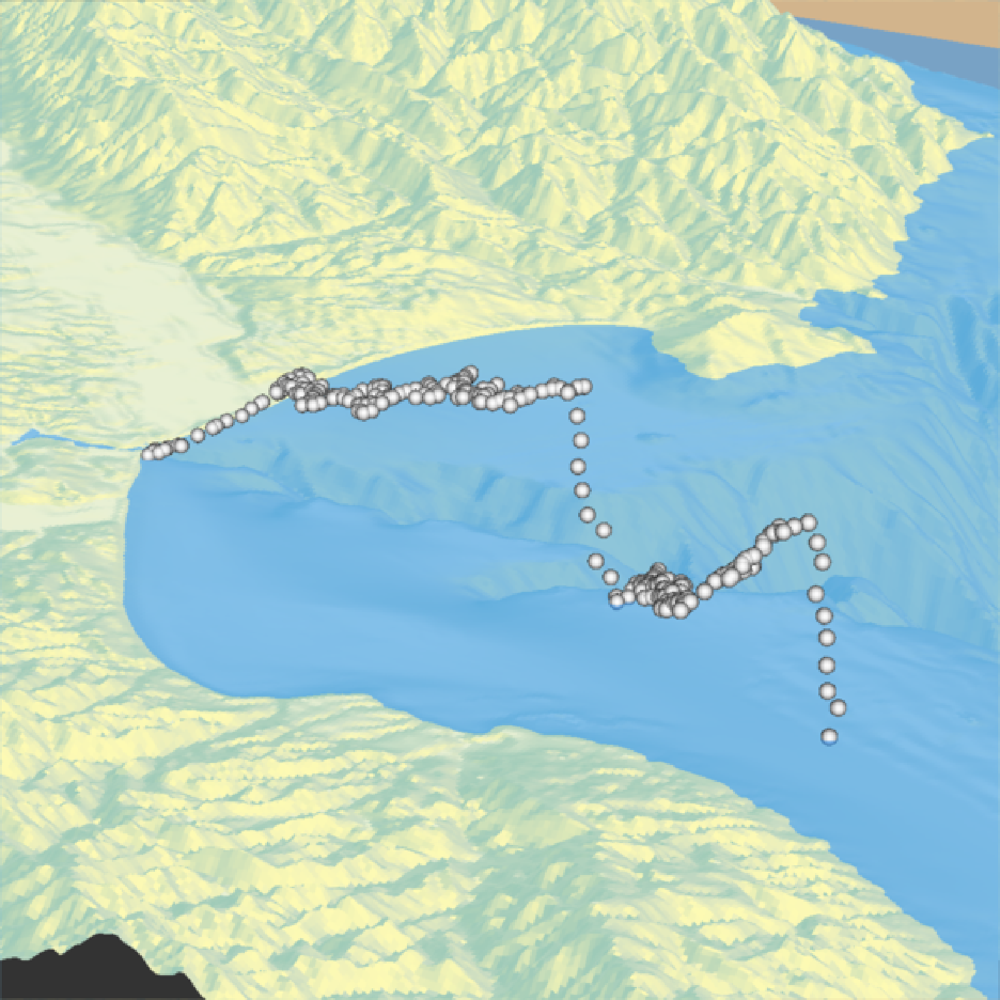

Adds 3D datapoints to the current scene, using latitude/longitude or coordinates in the reference system defined by the extent object. If no altitude is provided, the points will be elevated a constant offset above the heightmap. If the points goes off the edge, the nearest height on the heightmap will be used (unless that value is NA, in which the point will be removed).
render_points(
lat = NULL,
long = NULL,
altitude = NULL,
extent = NULL,
zscale = 1,
heightmap = NULL,
size = 3,
color = "black",
offset = 5,
clear_previous = FALSE
)Arguments
- lat
Vector of latitudes (or other coordinate in the same coordinate reference system as extent).
- long
Vector of longitudes (or other coordinate in the same coordinate reference system as extent).
- altitude
Default
NULL. Elevation of each point, in units of the elevation matrix (scaled by zscale). If a single value, all data will be rendered at that altitude.- extent
Either an object representing the spatial extent of the 3D scene (either from the
raster,terra,sf, orsppackages), a length-4 numeric vector specifyingc("xmin", "xmax","ymin","ymax"), or the spatial object (from the previously aforementioned packages) which will be automatically converted to an extent object.- zscale
Default
1. The ratio between the x and y spacing (which are assumed to be equal) and the z axis in the original heightmap.- heightmap
Default
NULL. Automatically extracted from the rgl window–only use if auto-extraction of matrix extent isn't working. A two-dimensional matrix, where each entry in the matrix is the elevation at that point. All points are assumed to be evenly spaced.- size
Default
3. The point size. This can be a vector (the same length aslatandlong) specifying a size for each point.- color
Default
black. Color of the point. This can also be a vector specifying the color of each point.- offset
Default
5. Offset of the track from the surface, ifaltitude = NULL.- clear_previous
Default
FALSE. IfTRUE, it will clear all existing points.
Examples
if(run_documentation()) {
#Starting at Moss Landing in Monterey Bay, we are going to simulate a flight of a bird going
#out to sea and diving for food.
#First, create simulated lat/long data
set.seed(2009)
moss_landing_coord = c(36.806807, -121.793332)
x_vel_out = -0.001 + rnorm(1000)[1:300]/1000
y_vel_out = rnorm(1000)[1:300]/200
z_out = c(seq(0,2000,length.out = 180), seq(2000,0,length.out=10),
seq(0,2000,length.out = 100), seq(2000,0,length.out=10))
bird_track_lat = list()
bird_track_long = list()
bird_track_lat[[1]] = moss_landing_coord[1]
bird_track_long[[1]] = moss_landing_coord[2]
for(i in 2:300) {
bird_track_lat[[i]] = bird_track_lat[[i-1]] + y_vel_out[i]
bird_track_long[[i]] = bird_track_long[[i-1]] + x_vel_out[i]
}
#Render the 3D map
montereybay %>%
sphere_shade() %>%
plot_3d(montereybay,zscale=50,water=TRUE,
shadowcolor="#40310a", background = "tan",
theta=210, phi=22, zoom=0.20, fov=55)
#Pass in the extent of the underlying raster (stored in an attribute for the montereybay
#dataset) and the latitudes, longitudes, and altitudes of the track.
render_points(extent = attr(montereybay,"extent"),
lat = unlist(bird_track_lat), long = unlist(bird_track_long),
altitude = z_out, zscale=50,color="white")
render_snapshot()
}

if(run_documentation()) {
#We'll set the altitude to zero to give the tracks a "shadow" over the water.
render_points(extent = attr(montereybay,"extent"),
lat = unlist(bird_track_lat), long = unlist(bird_track_long),
offset = 0, zscale=50, color="black")
render_camera(theta=30,phi=35,zoom=0.45,fov=70)
render_snapshot()
}
#> Error in transform_into_heightmap_coords(extent, heightmap, lat, long, altitude, offset, zscale): No altitude data requires heightmap argument be passed
if(run_documentation()) {
#Remove the points:
render_points(clear_previous=TRUE)
# Finally, we can also plot just GPS coordinates offset from the surface by leaving altitude `NULL`
# Here we plot a circle of values surrounding Moss Landing. This requires the original heightmap.
t = seq(0,2*pi,length.out=100)
circle_coords_lat = moss_landing_coord[1] + 0.3 * sin(t)
circle_coords_long = moss_landing_coord[2] + 0.3 * cos(t)
render_points(extent = attr(montereybay,"extent"), heightmap = montereybay,
lat = unlist(circle_coords_lat), long = unlist(circle_coords_long),
zscale=50, color="red", offset=100, size=5)
render_camera(theta = 160, phi=33, zoom=0.4, fov=55)
render_snapshot()
}
 if(run_documentation()) {
#And all of these work with `render_highquality()`
render_highquality(point_radius = 6, clamp_value=10, min_variance = 0,
sample_method = "sobol_blue", samples = 128)
}
if(run_documentation()) {
#And all of these work with `render_highquality()`
render_highquality(point_radius = 6, clamp_value=10, min_variance = 0,
sample_method = "sobol_blue", samples = 128)
}
 if(run_documentation()) {
#We can also change the material of the objects by setting the `point_material` and
#`point_material_args` arguments in `render_highquality()`
render_highquality(point_radius = 6, clamp_value=10, min_variance = 0,
sample_method = "sobol_blue", samples = 128,
point_material = rayrender::glossy,
point_material_args = list(gloss = 0.5, reflectance = 0.2))
}
if(run_documentation()) {
#We can also change the material of the objects by setting the `point_material` and
#`point_material_args` arguments in `render_highquality()`
render_highquality(point_radius = 6, clamp_value=10, min_variance = 0,
sample_method = "sobol_blue", samples = 128,
point_material = rayrender::glossy,
point_material_args = list(gloss = 0.5, reflectance = 0.2))
}